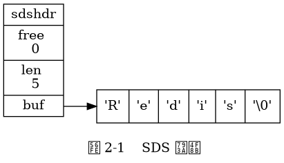
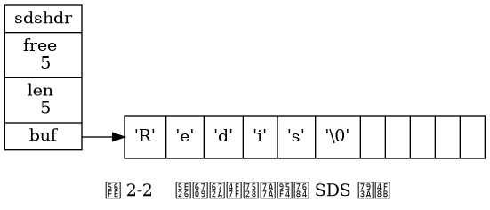

SDS 的定义¶
每个 sds.h/sdshdr 结构表示一个 SDS 值：
struct sdshdr {
// 记录 buf 数组中已使用字节的数量
// 等于 SDS 所保存字符串的长度
int len;
// 记录 buf 数组中未使用字节的数量
int free;
// 字节数组，用于保存字符串
char buf[];
};
图 2-1 展示了一个 SDS 示例：
free属性的值为0， 表示这个 SDS 没有分配任何未使用空间。len属性的值为5， 表示这个 SDS 保存了一个五字节长的字符串。buf属性是一个char类型的数组， 数组的前五个字节分别保存了'R'、'e'、'd'、'i'、's'五个字符， 而最后一个字节则保存了空字符'\0'。

SDS 遵循 C 字符串以空字符结尾的惯例，
保存空字符的 1 字节空间不计算在 SDS 的 len 属性里面，
并且为空字符分配额外的 1 字节空间，
以及添加空字符到字符串末尾等操作都是由 SDS 函数自动完成的，
所以这个空字符对于 SDS 的使用者来说是完全透明的。
遵循空字符结尾这一惯例的好处是， SDS 可以直接重用一部分 C 字符串函数库里面的函数。
举个例子，
如果我们有一个指向图 2-1 所示 SDS 的指针 s ，
那么我们可以直接使用 stdio.h/printf 函数，
通过执行以下语句：
printf("%s", s->buf);
来打印出 SDS 保存的字符串值 "Redis" ，
而无须为 SDS 编写专门的打印函数。
图 2-2 展示了另一个 SDS 示例:
这个 SDS 和之前展示的 SDS 一样， 都保存了字符串值
"Redis"。这个 SDS 和之前展示的 SDS 的区别在于， 这个 SDS 为
buf数组分配了五字节未使用空间， 所以它的free属性的值为5（图中使用五个空格来表示五字节的未使用空间）。

接下来的一节将详细地说明未使用空间在 SDS 中的作用。